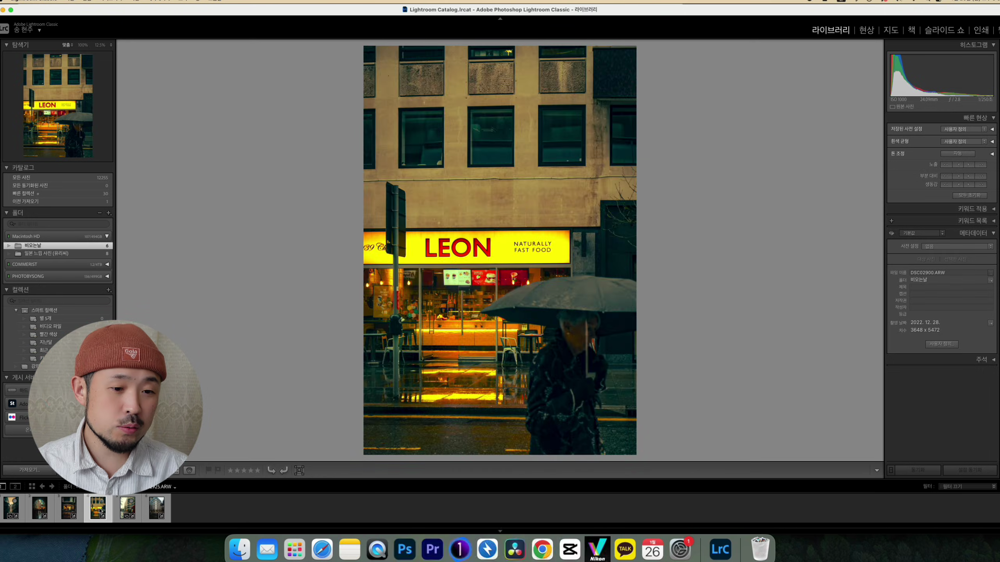
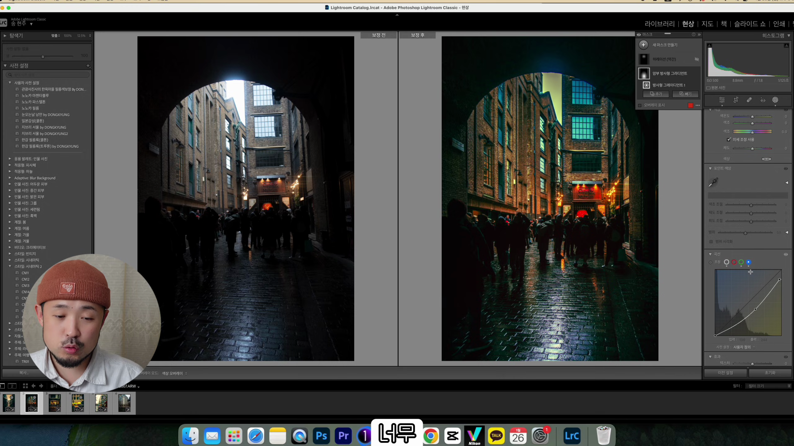
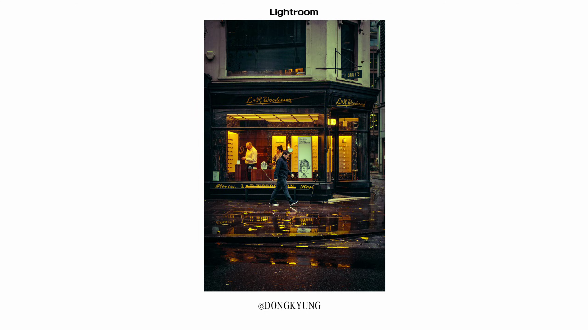

이번 포스트에서는 비 오는 날 찍은 사진의 매력과 함께 효과적인 보정 방법에 대해 알아보겠습니다. 특히, 동경이 공유하는 경험을 통해 여러분도 비 오는 날의 사진을 더욱 아름답게 만드실 수 있을 것입니다.

여행 중 찍은 비 오는 날 사진
비가 오는 날 찍었던 사진들을 보정해 본 경험을 여러분과 나누고자 합니다.
- 2023년에 런던과 파리를 여행했다.
- 비 오는 날 사진을 보정한 경험 공유

비 오는 날의 특별한 사진 분위기
비 오는 날에는 다양한 조명이 섞여 색다른 분위기를 만들어내며, 자연광만 있는 낮과는 다른 아름다움을 느낄 수 있습니다.
- 조명과 빛이 만들어내는 특별함
- 자연광과 비 오는 날의 사진 차이
SONY RX 100 III 카메라 소개
동경이 사용한 SONY RX 100 III 카메라는 여행 중 휴대가 간편하고 사진 품질 또한 뛰어납니다.
- SONY RX 100 III 사용
- 가볍고 컴팩트한 디자인

보정 도구와 방법
이번 포스트에서는 라이트룸을 이용해 비 오는 날 사진을 보정하는 과정과 마스킹 기법 적용법도 소개합니다.
- 라이트룸을 통한 보정
- 마스킹 기법 활용
사진 보정의 주요 포인트
사진의 어두운 부분을 강조하고 하늘과 자연광의 색온도를 조정하여 보다 시네마틱한 화면을 만드는 법을 설명합니다.
- 어두운 분위기 강조
- 불빛과 하늘의 색온도 조정
사진의 감정과 분위기 극대화
사진을 찍을 때, 주변 환경과 문화에 대한 깊은 이해가 필요하며, 비 오는 날의 감성을 잘 표현하는 것이 중요합니다.
- 주변 환경과 문화 이해
- 비 오는 날의 감성 표현
여행 중 비 오는 날 촬영의 가치
비 오는 날의 여행에서 촬영하는 사진들이 주는 각별한 순간과 감성을 공유하며, 독자들이 그 가치를 알게 되길 바랍니다.
- 비 오는 날의 특별한 촬영 경험
- 여행 중 감성 표현Tags: #비 오는 날 #사진 보정 #여행 #SONY RX 100 III #라이트룸 #마스킹 #조명 #시네마틱 #사진 촬영 #여행 사진